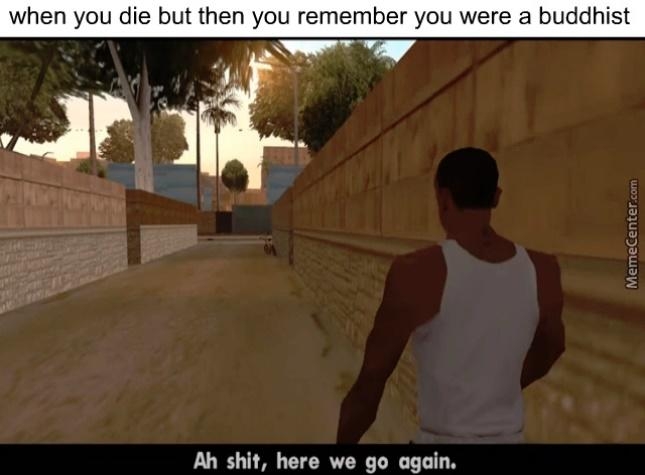

|
 |
Dieses Meme stammt aus dem Kultspiel GTA SAN ANDREAS. Das Bild zeigt CJ, den Protagonisten des Spiels, wie er eine Gasse entlang geht in seiner Heimatstadt SAN ANDREAS.
Er ist seit langer Zeit wieder dort, aber aufgrund seiner Vergangenheit, weiß er, dass dieser Ort ihm nicht gut bekommen wird.
Deswegen sagt er im deutschen:"Scheiße, hier geht's wieder los."
GTA SAN ANDREAS ist Ende März diesen Jahres sehr beliebt geworden, obwohl das Spiel schon Ende 2004 herauskam. |
Das Meme bekommt von mir eine glatte 10/10, da ich GTA SA eine sehr lange Zeit gespielt habe in meiner Kindheit und ich dadurch CJ sehr gut verstehen kann, wie er sich fühlt. |